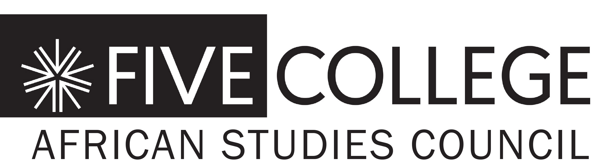

Introduction by Branwen Okpako, Film/Video and World Cinema
Humanities, Arts, and Cultural Studies of Hampshire College
The director will be present.
In collaboration with the African Cinema
Symposium and Festival:

Organized by Five College African Studies
Council and featuring screenings, presentations,
and conversations with leading
filmmakers, scholars, directors, and curators
of film festivals from Africa, Europe, and the
United States. The April 5 MMFF screening
launches this event.
April 6–8 in Gamble Auditorium, Mount
Holyoke College.